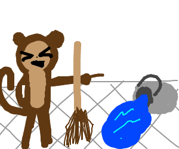

The Simian Army - Overview and Resources
The Simian Army is a suite of failure-inducing tools designed to add more capabilities beyond Chaos Monkey. While Chaos Monkey solely handles termination of random instances, Netflix engineers needed additional tools able to induce other types of failure. Some of the Simian Army tools have fallen out of favor in recent years, but each of the members serves a specific purpose aimed at bolstering a system’s failure resilience.
In this chapter we’ll jump into each member of the Simian Army and examine how these tools helped shaped modern Chaos Engineering best practices. We’ll also explore each of the Simian Chaos Strategies used to define which Chaos Experiments the system should undergo. Lastly, we’ll plunge into a short tutorial walking through the basics of installing and using the Simian Army toolset.
Simian Army Members
Each Simian Army member was built to perform a small yet precise Chaos Experiment. Results from these tiny tests can be easily measured and acted upon, allowing you and your team to quickly adapt. By performing frequent, intentional failures within your own systems, you’re able to create a more fault-tolerant application.
Active Simians
In addition to Chaos Monkey, the following simian trio are the only Army personnel to be publicly released, and which remain available for use today.
Janitor Monkey
Janitor Monkey also seeks out and disposes of unused resources within the cloud. It checks any given resource against a set of configurable rules to determine if its an eligible candidate for cleanup. Janitor Monkey features a number of configurable options, but the default behavior looks for resources like orphaned (non-auto-scaled) instances, volumes that are not attached to an instance, unused auto-scaling groups, and more.
Have a look at Using Simian Army Tools for a basic guide configuring and executing Janitor Monkey experiments.

Conformity Monkey
The Conformity Monkey is similar to Janitor Monkey – it seeks out instances that don’t conform to predefined rule sets and shuts them down. Here are a few of the non-conformities that Conformity Monkey looks for.
- Auto-scaling groups and their associated elastic load balancers that have mismatched availability zones.
- Clustered instances that are not contained in required security groups.
- Instances that are older than a certain age threshold.
Conformity Monkey capabilities have also been rolled into Spinnaker. More info on using Conformity Monkey can be found under Using Simian Army Tools.
Security Monkey
Security Monkey was originally created as an extension to Conformity Monkey, and it locates potential security vulnerabilities and violations. It has since broken off into a self-contained, standalone, open-source project. The current 1.X version is capable of monitoring many common cloud provider accounts for policy changes and insecure configurations. It also ships with a single-page application web interface.
Inactive/Private Simians
This group of simians were either been deprecated or were never publicly released.
Chaos Gorilla
AWS Cloud resources are distributed around the world, with a current total of 18 geographic Regions. Each region consists of one or more Availability Zones. Each availability zone acts as a separated private network of redundancy, communicating with one another via fiber within their given region.
The Chaos Gorilla tool simulates the outage of entire AWS availability zone. It’s been successfully used by Netflix to verify that their service load balancers functioned properly and kept services running, even in the event of an availability zone failure.
Chaos Kong
While rare, it is not unheard of for an AWS region to experience outages. Though Chaos Gorilla simulates availability zone outages, Netflix later created Chaos Kong to simulate region outages. As Netflix discusses in their blog, running frequent Chaos Kong experiments prior to any actual regional outages ensured that their systems were able to successfully evacuate traffic from the failing region into a nominal region, without suffering any severe degradation.

Netflix Chaos Kong Experiment - Courtesy of Netflix
Latency Monkey
Easily the most problematic Simian Army member Netflix devised, Latency Monkey causes artificial delays in RESTful client-server communications. By simulating network delays and/or failures, services can be tested to see how they react when their dependencies slow down or fail to respond.
While Netflix never publicly released the Latency Monkey code, and it eventually evolved into their Failure Injection Testing (FIT) service, which we discuss in more detail over here.
Doctor Monkey
Doctor Monkey performs instance health checks and monitors vital metrics like CPU load, memory usage, and so forth. Any instance deemed unhealthy by Doctor Monkey is removed from service.
Doctor Monkey is not open-sourced, but most of its functionality is built into other tools like Spinnaker, which includes a load balancer health checker, so instances that fail certain criteria are terminated and immediately replaced by new ones. Check out the How to Deploy Spinnaker on Kubernetes tutorial to see this in action!
10-18 Monkey
The 10-18 Monkey (aka l10n-i18n) detects run time issues and problematic configurations within instances that are accessible across multiple geographic regions, and which are serving unique localizations.
Simian Chaos Strategies
The original Chaos Monkey was built to inject failure by terminating EC2 instances. However, this provides an exceptionally limited simulation scope, so Chaos Strategies were added to the Simian Army toolset. Most of these strategies are disabled by default, but they can be toggled in the SimianArmy/src/main/resources/chaos.properties configuration file.
Instance Shutdown (Simius Mortus)
Shuts down an EC2 instance.
Configuration Key
simianarmy.chaos.shutdowninstance
Network Traffic Blocker (Simius Quies)
Blocks network traffic by applying restricted security access to the instance. This strategy only applies to VPC instances.
Configuration Key
simianarmy.chaos.blockallnetworktraffic
EBS Volume Detachment (Simius Amputa)
Detaches all EBS volumes from the instance to simulate I/O failure.
Configuration Key
simianarmy.chaos.detachvolumes
Burn-CPU (Simius Cogitarius)
Heavily utilizes the instance CPU.
Configuration Key
simianarmy.chaos.burncpu
Burn-IO (Simius Occupatus)
Heavily utilizes the instance disk.
Configuration Key
simianarmy.chaos.shutdowninstance
Fill Disk (Simius Plenus)
Attempts to fill the instance disk.
Configuration Key
simianarmy.chaos.shutdowninstance
Kill Processes (Simius Delirius)
Kills all Python and Java processes once every second.
Configuration Key
simianarmy.chaos.killprocesses
Null-Route (Simius Desertus)
Severs all instance-to-instance network traffic by null-routing the 10.0.0.0/8 network.
Configuration Key
simianarmy.chaos.nullroute
Fail DNS (Simius Nonomenius)
Prevents all DNS requests by blocking TCP and UDP traffic to port 53.
Configuration Key
simianarmy.chaos.faildns
Fail EC2 API (Simius Noneccius)
Halts all EC2 API communication by adding invalid entries to /etc/hosts.
Configuration Key
simianarmy.chaos.failec2
Fail S3 API (Simius Amnesius)
Stops all S3 API traffic by placing invalid entries in /etc/hosts.
Configuration Key
simianarmy.chaos.fails3
Fail DynamoDB API (Simius Nodynamus)
Prevents all DynamoCB API communication by adding invalid entries to /etc/hosts.
Configuration Key
simianarmy.chaos.faildynamodb
Network Corruption (Simius Politicus)
Corrupts the majority of network packets using a traffic shaping API.
Configuration Key
simianarmy.chaos.networkcorruption
Network Latency (Simius Tardus)
Delays all network packets by 1 second, plus or minus half a second, using a traffic shaping API.
Configuration Key
simianarmy.chaos.networklatency
Network Loss (Simius Perditus)
Drops a fraction of all network packets by using a traffic shaping API.
Configuration Key
simianarmy.chaos.networkloss
Using Simian Army Tools
Prerequisites
Installation
-
Start by creating an AWS Auto Scaling launch configuration.
aws autoscaling create-launch-configuration --launch-configuration-name simian-lc --instance-type t2.micro --image-id ami-51537029 -
Now use the generated
simian-lcconfiguration to create an Auto Scaling Group.aws autoscaling create-auto-scaling-group --auto-scaling-group-name monkey-target --launch-configuration-name simian-lc --availability-zones us-west-2a --min-size 1 --max-size 2 -
(Optional) Check that the scaling group was successfully added.
aws autoscaling describe-auto-scaling-groups --auto-scaling-group-names monkey-target --output json{ "AutoScalingGroups": [ { "AutoScalingGroupARN": "arn:aws:autoscaling:us-west-2:123456789012:autoScalingGroup:918a23bc-ea5a-4def-bc68-5356becfd35d:autoScalingGroupName/monkey-target", "ServiceLinkedRoleARN": "arn:aws:iam::123456789012:role/aws-service-role/autoscaling.amazonaws.com/AWSServiceRoleForAutoScaling", "TargetGroupARNs": [], "SuspendedProcesses": [], "DesiredCapacity": 1, "Tags": [], "EnabledMetrics": [], "LoadBalancerNames": [], "AutoScalingGroupName": "monkey-target", "DefaultCooldown": 300, "MinSize": 1, "Instances": [ { "ProtectedFromScaleIn": false, "AvailabilityZone": "us-west-2a", "InstanceId": "i-0e47c9f0df5150263", "HealthStatus": "Healthy", "LifecycleState": "Pending", "LaunchConfigurationName": "simian-lc" } ], "MaxSize": 2, "VPCZoneIdentifier": "", "HealthCheckGracePeriod": 0, "TerminationPolicies": [ "Default" ], "LaunchConfigurationName": "simian-lc", "CreatedTime": "2018-09-13T03:43:13.503Z", "AvailabilityZones": [ "us-west-2a" ], "HealthCheckType": "EC2", "NewInstancesProtectedFromScaleIn": false } ] } -
(Optional) Add any additional, manually-propagated EC2 instances you might need, using the same
ami-51537029image used for the auto-scaling group.aws ec2 run-instances --image-id ami-51537029 --count 1 --instance-type t2.micro --key-name id_rsa# OUTPUT 123456789012 r-0ade24933c15617ba INSTANCES 0 x86_64 False xen ami-51537029 i-062b161f4a1cddbb7 t2.micro id_rsa 2018-09-13T03:50:07.000Z ip-172-31-30-145.us-west-2.compute.internal 172.31.30.145 /dev/sda1 ebs True subnet-27c73d43 hvmvpc-0967976d -
(Optional) Attach any manually-created EC2 instances to the
monkey-targetauto-scaling group.aws autoscaling attach-instances --instance-ids i-062b161f4a1cddbb7 --auto-scaling-group-name monkey-target
Receiving Email Notifications
-
(Optional) If you want to receive email notifications you’ll need to add an email address identity to AWS Simple Email Service (SES).
us-east-1 Region only
At present, SimianArmy only attempts to send email notifications through the AWS
us-east-1region, regardless of configuration settings. Thus, be sure the recipient address is in theus-east-1AWS region.aws ses verify-email-identity --email-address me@example.com --region us-east-1 - Open your email client and click the verification link.
-
Verify the address was successfully added to the proper SES region.
aws ses list-identities --region=us-east-1# OUTPUT IDENTITIES me@example.com
Configuration
-
Clone the SimianArmy GitHub repository into the local directory of your choice.
git clone git://github.com/Netflix/SimianArmy.git ~/SimianArmy -
(Optional) Modify the
client.propertiesconfiguration to change AWS connection settings.nano ~/SimianArmy/src/main/resources/client.properties -
(Optional) Modify the
simianarmy.propertiesconfiguration to change general SimianArmy behavior.nano ~/SimianArmy/src/main/resources/simianarmy.properties -
(Optional) Modify the
chaos.propertiesconfiguration to change Chaos Monkey’s behavior.nano ~/SimianArmy/src/main/resources/chaos.properties-
By default, Chaos Monkey won’t target AWS Auto Scaling Groups unless you explicitly enable them. If desired, enable the recently added
monkey-targetASG by adding the following setting.simianarmy.chaos.ASG.monkey-target.enabled = true
-
-
(Optional) Modify the
janitor.propertiesconfiguration to change Janitor Monkey’s behavior.nano ~/SimianArmy/src/main/resources/janitormonkey.properties -
(Optional) If you opted to receive SES notifications, specify the recipient email address within each appropriate configuration file. The following example modifies the
conformity.propertiesfile.nano ~/SimianArmy/src/main/resources/conformity.properties# The property below needs to be a valid email address to receive the summary email of Conformity Monkey # after each run simianarmy.conformity.summaryEmail.to = foo@bar.com # The property below needs to be a valid email address to send notifications for Conformity monkey simianarmy.conformity.notification.defaultEmail = foo@bar.com # The property below needs to be a valid email address to send notifications for Conformity Monkey simianarmy.conformity.notification.sourceEmail = foo@bar.com
Executing Experiments
Run the included Gradle Jetty server to build and execute the Simian Army configuration.
./gradlew jettyRun
After the build completes you’ll see log output from each enabled Simian Army members, including Chaos Monkey 1.X.
Using Chaos Monkey 1.X
2018-09-11 14:31:06.625 - INFO BasicChaosMonkey - [BasicChaosMonkey.java:276] Group monkey-target [type ASG] enabled [prob 1.0]
2018-09-11 14:31:06.625 - INFO BasicChaosInstanceSelector - [BasicChaosInstanceSelector.java:89] Group monkey-target [type ASG] got lucky: 0.9183174043024381 > 0.16666666666666666
2018-09-11 14:31:06.626 - INFO Monkey - [Monkey.java:138] Reporting what I did...
This older version of Chaos Monkey uses probability to pseudo-randomly determine when an instance should be terminated. The output above shows that 0.918... exceeds the required chance of 1/6, so nothing happened. However, running ./gradlew jettyRun a few times will eventually result in a success. If necessary, you can also modify the probability settings in the chaos.properties file.
2018-09-11 14:33:06.625 - INFO BasicChaosMonkey - [BasicChaosMonkey.java:89] Group monkey-target [type ASG] enabled [prob 1.0]
2018-09-11 14:33:06.625 - INFO BasicChaosMonkey - [BasicChaosMonkey.java:280] leashed ChaosMonkey prevented from killing i-057701c3ab4f1e5a4 from group monkey-target [ASG], set simianarmy.chaos.leashed=false
By default, the simianarmy.chaos.leashed = true property in chaos.properties prevents Chaos Monkey from terminating instances, as indicated in the above log output. However, changing this property to false allows Chaos Monkey to terminate the selected instance.
2018-09-11 14:33:56.225 - INFO BasicChaosMonkey - [BasicChaosMonkey.java:89] Group monkey-target [type ASG] enabled [prob 1.0]
2018-09-11 14:33:56.225 - INFO BasicChaosMonkey - [BasicChaosMonkey.java:280] Terminated i-057701c3ab4f1e5a4 from group monkey-target [ASG]
Next Steps
Now that you’ve learned about the old school Simian Army, check out our Developer Tutorial to find out how to install and use the newer Chaos Monkey toolset. You can also learn about the many alternatives to Chaos Monkey, in which we shed light on tools and services designed to bring intelligent failure injection and powerful Chaos Engineering practices to your fingertips.